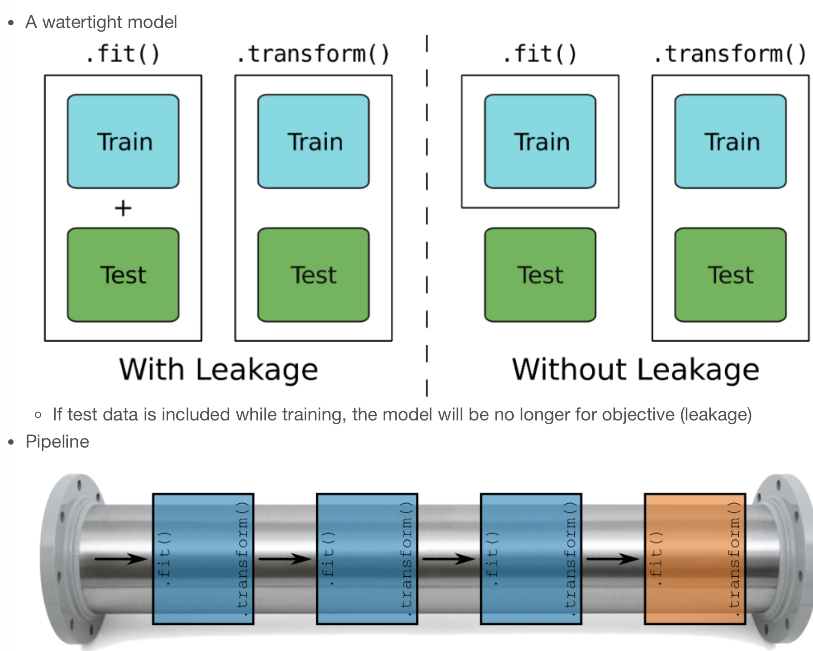
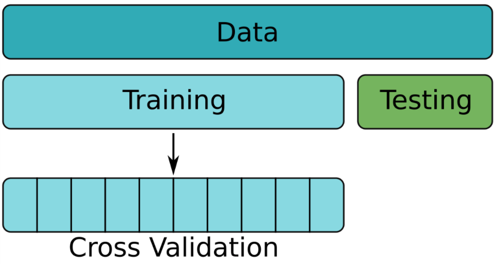
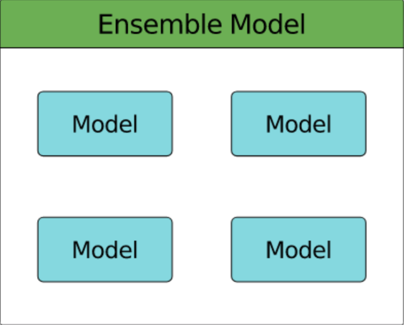

Code
import pyspark
from pyspark.sql import SparkSession
import pandas as pd
import numpy as npkakamana
April 11, 2023
Finally, you will learn how to improve the efficiency of your models. By using pipelines, you will be able to make your code more clear and easier to maintain. To test your models more effectively and select good model parameters, you will use cross-validation. Last but not least, you will experiment with two types of ensemble models.
This Ensembles & Pipelines is part of Datacamp course: Machine Learning with PySpark Spark is a powerful, general-purpose tool for working with large data sets. Spark transparently distributes compute tasks across a cluster. By doing this, operations are fast, but you can also focus on the analysis rather than worry about technical details. This course will teach you how to get data into Spark, and then dive into three fundamental Spark Machine Learning algorithms: Linear Regression, Logistic Regression/Classifiers, and creating pipelines. You will analyze a large dataset of flight delays and spam text messages along the way. With this background, you will be able to harness the power of Spark and apply it to your own Machine Learning projects.
This is my learning experience of data science through DataCamp. These repository contributions are part of my learning journey through my graduate program masters of applied data sciences (MADS) at University Of Michigan, DeepLearning.AI, Coursera & DataCamp. You can find my similar articles & more stories at my medium & LinkedIn profile. I am available at kaggle & github blogs & github repos. Thank you for your motivation, support & valuable feedback.
These include projects, coursework & notebook which I learned through my data science journey. They are created for reproducible & future reference purpose only. All source code, slides or screenshot are intellactual property of respective content authors. If you find these contents beneficial, kindly consider learning subscription from DeepLearning.AI Subscription, Coursera, DataCamp

You’re going to create the stages for the flights duration model pipeline. You will use these in the next exercise to build a pipeline and to create a regression model.
spark = SparkSession.builder.master('local[*]').appName('flights').getOrCreate()
# Read data from CSV file
flights = spark.read.csv('dataset/flights-larger.csv', sep=',', header=True, inferSchema=True,
nullValue='NA')
# Get number of records
print("The data contain %d records." % flights.count())
# View the first five records
flights.show(5)
# Check column data types
print(flights.printSchema())
print(flights.dtypes)23/04/11 01:11:44 WARN Utils: Your hostname, kamrans-Mac-mini.local resolves to a loopback address: 127.0.0.1; using 192.168.1.18 instead (on interface en1)
23/04/11 01:11:44 WARN Utils: Set SPARK_LOCAL_IP if you need to bind to another address
23/04/11 01:11:44 WARN NativeCodeLoader: Unable to load native-hadoop library for your platform... using builtin-java classes where applicable
23/04/11 01:11:45 WARN Utils: Service 'SparkUI' could not bind on port 4040. Attempting port 4041.
23/04/11 01:11:45 WARN Utils: Service 'SparkUI' could not bind on port 4041. Attempting port 4042.
23/04/11 01:11:45 WARN Utils: Service 'SparkUI' could not bind on port 4042. Attempting port 4043.
The data contain 275000 records.
+---+---+---+-------+------+---+----+------+--------+-----+
|mon|dom|dow|carrier|flight|org|mile|depart|duration|delay|
+---+---+---+-------+------+---+----+------+--------+-----+
| 10| 10| 1| OO| 5836|ORD| 157| 8.18| 51| 27|
| 1| 4| 1| OO| 5866|ORD| 466| 15.5| 102| null|
| 11| 22| 1| OO| 6016|ORD| 738| 7.17| 127| -19|
| 2| 14| 5| B6| 199|JFK|2248| 21.17| 365| 60|
| 5| 25| 3| WN| 1675|SJC| 386| 12.92| 85| 22|
+---+---+---+-------+------+---+----+------+--------+-----+
only showing top 5 rows
root
|-- mon: integer (nullable = true)
|-- dom: integer (nullable = true)
|-- dow: integer (nullable = true)
|-- carrier: string (nullable = true)
|-- flight: integer (nullable = true)
|-- org: string (nullable = true)
|-- mile: integer (nullable = true)
|-- depart: double (nullable = true)
|-- duration: integer (nullable = true)
|-- delay: integer (nullable = true)
None
[('mon', 'int'), ('dom', 'int'), ('dow', 'int'), ('carrier', 'string'), ('flight', 'int'), ('org', 'string'), ('mile', 'int'), ('depart', 'double'), ('duration', 'int'), ('delay', 'int')]Setting default log level to "WARN".
To adjust logging level use sc.setLogLevel(newLevel). For SparkR, use setLogLevel(newLevel).from pyspark.ml.feature import StringIndexer, OneHotEncoder, VectorAssembler
from pyspark.ml.regression import LinearRegression
# Convert categorical strings to index values
indexer = StringIndexer(inputCol='org', outputCol='org_idx')
# One-hot encode index values
onehot = OneHotEncoder(
inputCols=['org_idx', 'dow'],
outputCols=['org_dummy', 'dow_dummy']
)
# Assemble predictors into a single column
assembler = VectorAssembler(inputCols=['km', 'org_dummy', 'dow_dummy'], outputCol='features')
# A linear regression object
regression = LinearRegression(labelCol='duration')You’re now ready to put those stages together in a pipeline.
You’ll construct the pipeline and then train the pipeline on the training data. This will apply each of the individual stages in the pipeline to the training data in turn. None of the stages will be exposed to the testing data at all: there will be no leakage!
Once the entire pipeline has been trained it will then be used to make predictions on the testing data.
from pyspark.ml import Pipeline
flights_train, flights_test = flights.randomSplit([0.8, 0.2])
# Construct a pipeline
pipeline = Pipeline(stages=[indexer, onehot, assembler, regression])
# Train the pipeline on the training data
pipeline = pipeline.fit(flights_train)
# Make predictions on the test data
predictions = pipeline.transform(flights_test)23/04/11 01:14:23 WARN Instrumentation: [8d3fcef9] regParam is zero, which might cause numerical instability and overfitting.
23/04/11 01:14:23 WARN InstanceBuilder$JavaBLAS: Failed to load implementation from:dev.ludovic.netlib.blas.VectorBLAS
23/04/11 01:14:24 WARN InstanceBuilder$NativeLAPACK: Failed to load implementation from:dev.ludovic.netlib.lapack.JNILAPACKYou haven’t looked at the SMS data for quite a while. Last time we did the following:
Each of these steps was done independently. This seems like a great application for a pipeline!
from pyspark.sql.types import StructType, StructField, IntegerType, StringType
# Specify column names and types
schema = StructType([
StructField("id", IntegerType()),
StructField("text", StringType()),
StructField("label", IntegerType())
])
# Read data from CSV file
sms = spark.read.csv('dataset/sms.csv', sep=';', header=False, schema=schema, nullValue='NA')
sms.show(5)+---+--------------------+-----+
| id| text|label|
+---+--------------------+-----+
| 1|Sorry, I'll call ...| 0|
| 2|Dont worry. I gue...| 0|
| 3|Call FREEPHONE 08...| 1|
| 4|Win a 1000 cash p...| 1|
| 5|Go until jurong p...| 0|
+---+--------------------+-----+
only showing top 5 rows
from pyspark.ml.feature import Tokenizer, StopWordsRemover, HashingTF, IDF
from pyspark.ml.classification import LogisticRegression
# Break text into tokens at non-word characters
tokenizer = Tokenizer(inputCol='text', outputCol='words')
# Remove stop words
remover = StopWordsRemover(inputCol=tokenizer.getOutputCol(), outputCol='terms')
# Apply the hashing trick and transform to TF-IDF
hasher = HashingTF(inputCol=remover.getOutputCol(), outputCol='hash')
idf = IDF(inputCol=hasher.getOutputCol(), outputCol='features')
# Create a logistic regression object and add everything to a pipeline
logistic = LogisticRegression()
pipeline = Pipeline(stages=[tokenizer, remover, hasher, idf, logistic])
You’ve already built a few models for predicting flight duration and evaluated them with a simple train/test split. However, cross-validation provides a much better way to evaluate model performance.
In this exercise you’re going to train a simple model for flight duration using cross-validation. Travel time is usually strongly correlated with distance, so using the km column alone should give a decent model.
+---+---+---+-------+------+---+------+--------+-----+------+--------+
|mon|dom|dow|carrier|flight|org|depart|duration|delay| km|features|
+---+---+---+-------+------+---+------+--------+-----+------+--------+
| 10| 10| 1| OO| 5836|ORD| 8.18| 51| 27| 253.0| [253.0]|
| 1| 4| 1| OO| 5866|ORD| 15.5| 102| null| 750.0| [750.0]|
| 11| 22| 1| OO| 6016|ORD| 7.17| 127| -19|1188.0|[1188.0]|
| 2| 14| 5| B6| 199|JFK| 21.17| 365| 60|3618.0|[3618.0]|
| 5| 25| 3| WN| 1675|SJC| 12.92| 85| 22| 621.0| [621.0]|
+---+---+---+-------+------+---+------+--------+-----+------+--------+
only showing top 5 rows
from pyspark.ml.tuning import ParamGridBuilder, CrossValidator
from pyspark.ml.evaluation import RegressionEvaluator
flights_train, flights_test = flights.randomSplit([0.8, 0.2])
# Create an empty parameter grid
params = ParamGridBuilder().build()
# Create objects for building and evaluating a regression model
regression = LinearRegression(labelCol='duration')
evaluator = RegressionEvaluator(labelCol='duration')
# Create a cross validator
cv = CrossValidator(estimator=regression, estimatorParamMaps=params,
evaluator=evaluator, numFolds=5)
# Train and test model on multiple folds of the training data
cv = cv.fit(flights_train)23/04/11 01:25:42 WARN Instrumentation: [9bf6d099] regParam is zero, which might cause numerical instability and overfitting.
23/04/11 01:25:42 WARN InstanceBuilder$NativeBLAS: Failed to load implementation from:dev.ludovic.netlib.blas.JNIBLAS
23/04/11 01:25:42 WARN InstanceBuilder$NativeBLAS: Failed to load implementation from:dev.ludovic.netlib.blas.ForeignLinkerBLAS
23/04/11 01:25:43 WARN Instrumentation: [27679707] regParam is zero, which might cause numerical instability and overfitting.
23/04/11 01:25:44 WARN Instrumentation: [09ebdce0] regParam is zero, which might cause numerical instability and overfitting.
23/04/11 01:25:45 WARN Instrumentation: [27307a36] regParam is zero, which might cause numerical instability and overfitting.
23/04/11 01:25:46 WARN Instrumentation: [ab50fc5c] regParam is zero, which might cause numerical instability and overfitting.
23/04/11 01:25:47 WARN Instrumentation: [9fadf9ca] regParam is zero, which might cause numerical instability and overfitting. The cross-validated model that you just built was simple, using km alone to predict duration.
Another important predictor of flight duration is the origin airport. Flights generally take longer to get into the air from busy airports. Let’s see if adding this predictor improves the model!
In this exercise you’ll add the org field to the model. However, since org is categorical, there’s more work to be done before it can be included: it must first be transformed to an index and then one-hot encoded before being assembled with km and used to build the regression model. We’ll wrap these operations up in a pipeline.
params = ParamGridBuilder().build()
# Create regression model
regression = LinearRegression(labelCol='duration')
evaluator = RegressionEvaluator(labelCol='duration')
# Create an indexer for the org field
indexer = StringIndexer(inputCol='org', outputCol='org_idx')
# Create an one-hot encoder for the indexed org field
onehot = OneHotEncoder(inputCol='org_idx', outputCol='org_dummy')
# Assemble the km and one-hot encoded fields
assembler = VectorAssembler(inputCols=['km', 'org_dummy'], outputCol='features')
# Create a pipeline and cross-validator
pipeline = Pipeline(stages=[indexer, onehot, assembler, regression])
cv = CrossValidator(estimator=pipeline,
estimatorParamMaps=params,
evaluator=evaluator)Up until now you’ve been using the default hyper-parameters when building your models. In this exercise you’ll use cross validation to choose an optimal (or close to optimal) set of model hyper-parameters.
params = ParamGridBuilder()
# Add grids for two parameters
params = params.addGrid(regression.regParam, [0.01, 0.1, 1.0, 10.0])\
.addGrid(regression.elasticNetParam, [0.0, 0.5, 1.0])
# Build the parameter grid
params = params.build()
print('Number of models to be tested: ', len(params))
# Create cross-validator
cv = CrossValidator(estimator=pipeline, estimatorParamMaps=params,
evaluator=evaluator, numFolds=5)Number of models to be tested: 12You just set up a CrossValidator to find good parameters for the linear regression model predicting flight duration.
Now you’re going to take a closer look at the resulting model, split out the stages and use it to make predictions on the testing data.
flights_train, flights_test = flights.drop('features').randomSplit([0.8, 0.2])
# Train the data
cvModel = cv.fit(flights_train)
# Get the best model from cross validation
best_model = cvModel.bestModel
# Look at the stages in the best model
print(best_model.stages)
# Get the parameters for the LinearRegression object in the best model
best_model.stages[3].extractParamMap()
# Generate predictions on test data using the best model then calculate RMSE
predictions = best_model.transform(flights_test)
evaluator.evaluate(predictions) [StringIndexerModel: uid=StringIndexer_6ba5766c4966, handleInvalid=error, OneHotEncoderModel: uid=OneHotEncoder_7f073152869e, dropLast=true, handleInvalid=error, VectorAssembler_3bc868859403, LinearRegressionModel: uid=LinearRegression_ee4edce3c1eb, numFeatures=8]11.143207254742897The pipeline you built earlier for the SMS spam model used the default parameters for all of the elements in the pipeline. It’s very unlikely that these parameters will give a particularly good model though.
In this exercise you’ll set up a parameter grid which can be used with cross validation to choose a good set of parameters for the SMS spam classifier.
params = ParamGridBuilder()
# Add grid for hashing trick parameters
params = params.addGrid(hasher.numFeatures, (1024, 4096, 16384))\
.addGrid(hasher.binary, (True, False))
# Add grid for logistic regression parameters
params = params.addGrid(logistic.regParam, (0.01, 0.1, 1.0, 10.0))\
.addGrid(logistic.elasticNetParam, (0.0, 0.5, 1.0))
# Build parameter grid
params = params.build()
print('Number of models to be tested: ', len(params))Number of models to be tested: 72
You’ve previously built a classifier for flights likely to be delayed using a Decision Tree. In this exercise you’ll compare a Decision Tree model to a Gradient-Boosted Trees model.
from pyspark.ml.classification import RandomForestClassifier, GBTClassifier
from pyspark.ml.evaluation import BinaryClassificationEvaluator
assembler = VectorAssembler(inputCols=['mon', 'depart', 'duration'], outputCol='features')
flights = assembler.transform(flights.drop('features'))
flights = flights.withColumn('label', (flights.delay >= 15).cast('integer'))
flights = flights.select('mon', 'depart', 'duration', 'features', 'label')
flights = flights.dropna()
flights.show(5)+---+------+--------+-----------------+-----+
|mon|depart|duration| features|label|
+---+------+--------+-----------------+-----+
| 10| 8.18| 51| [10.0,8.18,51.0]| 1|
| 11| 7.17| 127|[11.0,7.17,127.0]| 0|
| 2| 21.17| 365|[2.0,21.17,365.0]| 1|
| 5| 12.92| 85| [5.0,12.92,85.0]| 1|
| 3| 13.33| 182|[3.0,13.33,182.0]| 1|
+---+------+--------+-----------------+-----+
only showing top 5 rows
from pyspark.ml.classification import DecisionTreeClassifier, GBTClassifier
from pyspark.ml.evaluation import BinaryClassificationEvaluator
from pprint import pprint
flights_train, flights_test = flights.randomSplit([0.8, 0.2])
# Create model objects and train on training data
tree = DecisionTreeClassifier().fit(flights_train)
gbt = GBTClassifier().fit(flights_train)
# Compare AUC on test data
evaluator = BinaryClassificationEvaluator()
evaluator.evaluate(tree.transform(flights_test))
evaluator.evaluate(gbt.transform(flights_test))
# Find the number of trees and the relative importance of features
pprint(gbt.trees)
print(gbt.featureImportances) [DecisionTreeRegressionModel: uid=dtr_da5cb5beddbf, depth=5, numNodes=63, numFeatures=3,
DecisionTreeRegressionModel: uid=dtr_9ba36e5b4550, depth=5, numNodes=63, numFeatures=3,
DecisionTreeRegressionModel: uid=dtr_b2a777f5a16c, depth=5, numNodes=63, numFeatures=3,
DecisionTreeRegressionModel: uid=dtr_209795a3a14f, depth=5, numNodes=63, numFeatures=3,
DecisionTreeRegressionModel: uid=dtr_b71c35fabc6b, depth=5, numNodes=63, numFeatures=3,
DecisionTreeRegressionModel: uid=dtr_cc236de45a82, depth=5, numNodes=63, numFeatures=3,
DecisionTreeRegressionModel: uid=dtr_19450b882bd5, depth=5, numNodes=63, numFeatures=3,
DecisionTreeRegressionModel: uid=dtr_515b0f246121, depth=5, numNodes=63, numFeatures=3,
DecisionTreeRegressionModel: uid=dtr_37eb7de293be, depth=5, numNodes=63, numFeatures=3,
DecisionTreeRegressionModel: uid=dtr_5e7c64f779f3, depth=5, numNodes=63, numFeatures=3,
DecisionTreeRegressionModel: uid=dtr_e275675a9245, depth=5, numNodes=63, numFeatures=3,
DecisionTreeRegressionModel: uid=dtr_7b15c8d4ff36, depth=5, numNodes=63, numFeatures=3,
DecisionTreeRegressionModel: uid=dtr_57fab16b6718, depth=5, numNodes=63, numFeatures=3,
DecisionTreeRegressionModel: uid=dtr_55e31beee3e3, depth=5, numNodes=61, numFeatures=3,
DecisionTreeRegressionModel: uid=dtr_8db1b1896898, depth=5, numNodes=63, numFeatures=3,
DecisionTreeRegressionModel: uid=dtr_013906547839, depth=5, numNodes=63, numFeatures=3,
DecisionTreeRegressionModel: uid=dtr_a7e676c3fe85, depth=5, numNodes=63, numFeatures=3,
DecisionTreeRegressionModel: uid=dtr_a586a5bf8967, depth=5, numNodes=63, numFeatures=3,
DecisionTreeRegressionModel: uid=dtr_3dd45367e24c, depth=5, numNodes=63, numFeatures=3,
DecisionTreeRegressionModel: uid=dtr_a5a3ad28722b, depth=5, numNodes=63, numFeatures=3]
(3,[0,1,2],[0.3982045188114991,0.3047020752257714,0.29709340596272954])In this exercise you’ll bring together cross validation and ensemble methods. You’ll be training a Random Forest classifier to predict delayed flights, using cross validation to choose the best values for model parameters.
You’ll find good values for the following parameters:
featureSubsetStrategy — the number of features to consider for splitting at each node and maxDepth — the maximum number of splits along any branch.
from pyspark.ml.classification import RandomForestClassifier
# Create a random forest classifier
forest = RandomForestClassifier()
# Create a parameter grid
params = ParamGridBuilder() \
.addGrid(forest.featureSubsetStrategy, ['all', 'onethird', 'sqrt', 'log2']) \
.addGrid(forest.maxDepth, [2, 5, 10]) \
.build()
# Create a binary classification evaluator
evaluator = BinaryClassificationEvaluator()
# Create a cross-validator
cv = CrossValidator(estimator=forest, estimatorParamMaps=params,
evaluator=evaluator, numFolds=5)In this final exercise you’ll be evaluating the results of cross-validation on a Random Forest model
cvModel = cv.fit(flights_train)
# Average AUC for each parameter combination in grid
avg_auc = cvModel.avgMetrics
# Average AUC for the best model
best_model_auc = max(avg_auc)
# What's the optimal paramter value?
opt_max_depth = cvModel.bestModel.explainParam('maxDepth')
opt_feat_substrat = cvModel.bestModel.explainParam('featureSubsetStrategy')
# AUC for best model on test data
best_auc = evaluator.evaluate(cvModel.transform(flights_test))
print(best_auc)23/04/11 01:44:53 WARN DAGScheduler: Broadcasting large task binary with size 1350.9 KiB
23/04/11 01:44:53 WARN DAGScheduler: Broadcasting large task binary with size 2.4 MiB
23/04/11 01:44:54 WARN DAGScheduler: Broadcasting large task binary with size 1378.0 KiB
23/04/11 01:44:58 WARN DAGScheduler: Broadcasting large task binary with size 1524.6 KiB
23/04/11 01:45:02 WARN DAGScheduler: Broadcasting large task binary with size 1392.3 KiB
23/04/11 01:45:02 WARN DAGScheduler: Broadcasting large task binary with size 2.4 MiB
23/04/11 01:45:03 WARN DAGScheduler: Broadcasting large task binary with size 1208.6 KiB
23/04/11 01:45:06 WARN DAGScheduler: Broadcasting large task binary with size 1392.3 KiB
23/04/11 01:45:06 WARN DAGScheduler: Broadcasting large task binary with size 2.4 MiB
23/04/11 01:45:07 WARN DAGScheduler: Broadcasting large task binary with size 1208.6 KiB
23/04/11 01:45:11 WARN DAGScheduler: Broadcasting large task binary with size 1355.6 KiB
23/04/11 01:45:12 WARN DAGScheduler: Broadcasting large task binary with size 2.4 MiB
23/04/11 01:45:12 WARN DAGScheduler: Broadcasting large task binary with size 1355.0 KiB
23/04/11 01:45:16 WARN DAGScheduler: Broadcasting large task binary with size 1451.9 KiB
23/04/11 01:45:19 WARN DAGScheduler: Broadcasting large task binary with size 1382.8 KiB
23/04/11 01:45:20 WARN DAGScheduler: Broadcasting large task binary with size 2.4 MiB
23/04/11 01:45:20 WARN DAGScheduler: Broadcasting large task binary with size 1202.0 KiB
23/04/11 01:45:24 WARN DAGScheduler: Broadcasting large task binary with size 1382.8 KiB
23/04/11 01:45:24 WARN DAGScheduler: Broadcasting large task binary with size 2.4 MiB
23/04/11 01:45:25 WARN DAGScheduler: Broadcasting large task binary with size 1202.0 KiB
23/04/11 01:45:29 WARN DAGScheduler: Broadcasting large task binary with size 1346.4 KiB
23/04/11 01:45:29 WARN DAGScheduler: Broadcasting large task binary with size 2.4 MiB
23/04/11 01:45:30 WARN DAGScheduler: Broadcasting large task binary with size 1350.7 KiB
23/04/11 01:45:33 WARN DAGScheduler: Broadcasting large task binary with size 1486.4 KiB
23/04/11 01:45:37 WARN DAGScheduler: Broadcasting large task binary with size 1386.7 KiB
23/04/11 01:45:37 WARN DAGScheduler: Broadcasting large task binary with size 2.4 MiB
23/04/11 01:45:38 WARN DAGScheduler: Broadcasting large task binary with size 1213.8 KiB
23/04/11 01:45:41 WARN DAGScheduler: Broadcasting large task binary with size 1386.7 KiB
23/04/11 01:45:42 WARN DAGScheduler: Broadcasting large task binary with size 2.4 MiB
23/04/11 01:45:42 WARN DAGScheduler: Broadcasting large task binary with size 1213.8 KiB
23/04/11 01:45:46 WARN DAGScheduler: Broadcasting large task binary with size 1352.6 KiB
23/04/11 01:45:46 WARN DAGScheduler: Broadcasting large task binary with size 2.4 MiB
23/04/11 01:45:47 WARN DAGScheduler: Broadcasting large task binary with size 1352.5 KiB
23/04/11 01:45:50 WARN DAGScheduler: Broadcasting large task binary with size 1455.6 KiB
23/04/11 01:45:54 WARN DAGScheduler: Broadcasting large task binary with size 1396.3 KiB
23/04/11 01:45:55 WARN DAGScheduler: Broadcasting large task binary with size 2.5 MiB
23/04/11 01:45:55 WARN DAGScheduler: Broadcasting large task binary with size 1216.2 KiB
23/04/11 01:45:58 WARN DAGScheduler: Broadcasting large task binary with size 1396.3 KiB
23/04/11 01:45:59 WARN DAGScheduler: Broadcasting large task binary with size 2.5 MiB
23/04/11 01:45:59 WARN DAGScheduler: Broadcasting large task binary with size 1216.2 KiB
23/04/11 01:46:03 WARN DAGScheduler: Broadcasting large task binary with size 1340.2 KiB
23/04/11 01:46:04 WARN DAGScheduler: Broadcasting large task binary with size 2.4 MiB
23/04/11 01:46:04 WARN DAGScheduler: Broadcasting large task binary with size 1333.2 KiB
23/04/11 01:46:08 WARN DAGScheduler: Broadcasting large task binary with size 1460.4 KiB
23/04/11 01:46:11 WARN DAGScheduler: Broadcasting large task binary with size 1384.7 KiB
23/04/11 01:46:12 WARN DAGScheduler: Broadcasting large task binary with size 2.4 MiB
23/04/11 01:46:12 WARN DAGScheduler: Broadcasting large task binary with size 1167.4 KiB
23/04/11 01:46:15 WARN DAGScheduler: Broadcasting large task binary with size 1384.7 KiB
23/04/11 01:46:16 WARN DAGScheduler: Broadcasting large task binary with size 2.4 MiB
23/04/11 01:46:16 WARN DAGScheduler: Broadcasting large task binary with size 1167.4 KiB
23/04/11 01:46:20 WARN DAGScheduler: Broadcasting large task binary with size 1368.7 KiB
23/04/11 01:46:20 WARN DAGScheduler: Broadcasting large task binary with size 2.4 MiB
23/04/11 01:46:21 WARN DAGScheduler: Broadcasting large task binary with size 1182.1 KiB
0.6838135218254684